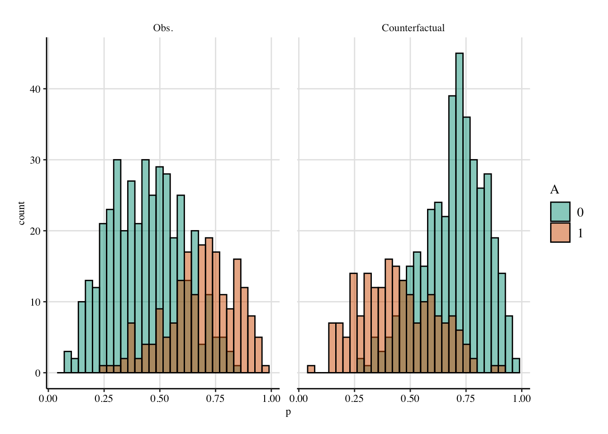
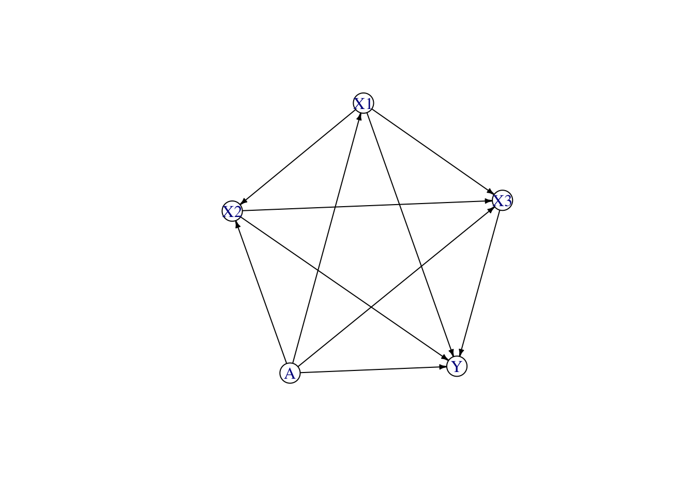
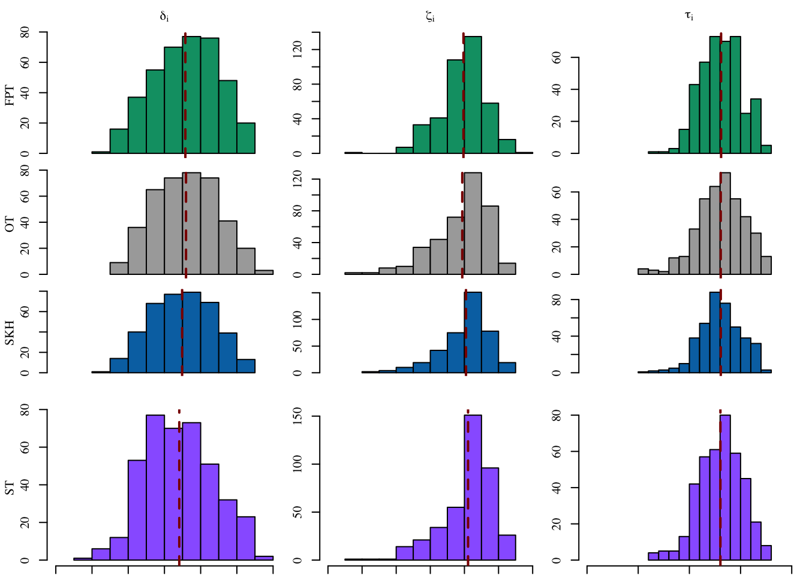
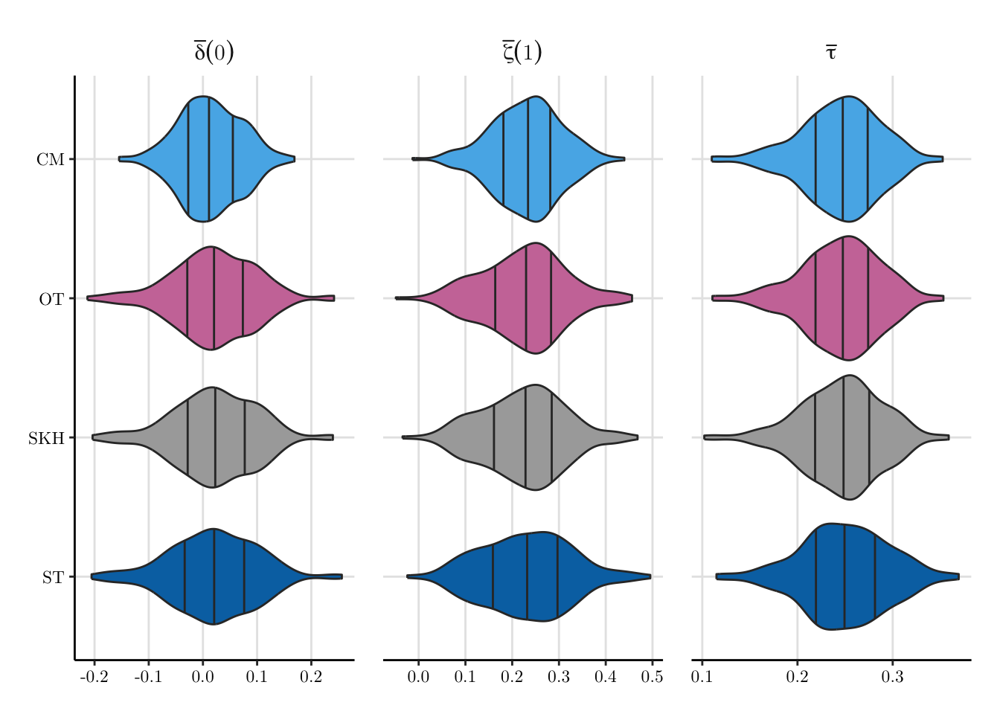

library(tidyverse)
# remotes::install_github(
# repo = "fer-agathe/sequential_transport", subdir = "seqtransfairness"
# )
library(seqtransfairness)
# remotes::install_github(repo = "fer-agathe/transport-simplex")
library(transportsimplex)
library(randomForest)
library(grf)
library(cluster)
library(dplyr)
library(fairadapt)
# Also required:
# install.packages(mlr3fairness)13 Simulated Data
Objectives
In this chapter, we illustrate how our methodology based on a sequential transport approach works on simulated data.
\[ \definecolor{wongBlack}{RGB}{0,0,0} \definecolor{wongGold}{RGB}{230, 159, 0} \definecolor{wongLightBlue}{RGB}{86, 180, 233} \definecolor{wongGreen}{RGB}{0, 158, 115} \definecolor{wongYellow}{RGB}{240, 228, 66} \definecolor{wongBlue}{RGB}{0, 114, 178} \definecolor{wongOrange}{RGB}{213, 94, 0} \definecolor{wongPurple}{RGB}{204, 121, 167} \definecolor{colA}{RGB}{255, 221, 85} \definecolor{colB}{RGB}{148, 78, 223} \definecolor{colC}{RGB}{63, 179, 178} \definecolor{colGpeZero}{RGB}{127, 23, 14} \definecolor{colGpeUn}{RGB}{27, 149, 224} \]
Codes for graphical parameters.
library(extrafont, quietly = TRUE)
col_group <- c("#00A08A","#F2AD00", "#1b95e0")
colour_methods <- c(
"OT" = "#CC79A7",
"OT-M" = "#009E73",
"skh" = "darkgray",
"seq_1" = "#0072B2", "seq_2" = "#D55E00",
"fairadapt_1" = "#9966FF", "fairadapt_2" = "#7CAE00"
)
colGpe1 <- col_group[2]
colGpe0 <- col_group[1]
colGpet <- col_group[3]
loadfonts(device = "pdf", quiet = TRUE)
font_size <- 20
font_family <- "serif"
path <- "./figs/"
if (!dir.exists(path)) dir.create(path)We load the functions that will allow us to build the counterfactuals (see Chapter 4), and some graphical themes for the plots (see [Chapter 3):
source("../scripts/functions.R")
source("../scripts/utils.R")13.1 Data Generating Process
We simulate a dataset comprising a binary treatment indicator \(A \in \{0,1\}\), a binary outcome \(Y \in \{0,1\}\), and three covariates: two continuous variables \(X_1, X_2 \in \mathbb{R}\) and one categorical variable \(X_3 \in \{\text{A}, \text{B}, \text{C}\}\). For individuals with \(A = 0\), the vector \((X_1, X_2)\) is drawn from a bivariate normal distribution with mean vector \(\mu_0 = (-1, -1)\) and covariance matrix \(\Sigma_0 = 1.2^2 \begin{bmatrix} 1 & 0.5 \\ 0.5 & 1 \end{bmatrix}\). For those with \(A = 1\), the distribution shifts to mean \(\mu_1 = (1.5, 1.5)\) and covariance \(\Sigma_1 = 0.9^2 \begin{bmatrix} 1 & -0.4 \\ -0.4 & 1 \end{bmatrix}\). This leads to distinct location and dependence structures across treatment groups.
The categorical variable \(X_3\) is generated conditionally on \(X_1, X_2\), and \(A\) via a multinomial logistic model. Letting \(p_{\text{A}}, p_{\text{B}}, p_{\text{C}}\) denote the unnormalized logit scores for each level of \(X_3\), we set:
\[ \begin{aligned} p_{\text{A}} &= 0.5 + 0.3 X_1 - 0.4 X_2 + 0.2 A, \\ p_{\text{B}} &= -0.3 + 0.5 X_2 - 0.2 X_1 - 0.1 A, \\ p_{\text{C}} &= 0, \end{aligned} \]
with the associated probabilities obtained via softmax normalization:
\[ P(X_3 = k) = \frac{\exp(p_k)}{\exp(p_{\text{A}}) + \exp(p_{\text{B}}) + \exp(p_{\text{C}})}, \quad \text{for } k \in \{\text{A}, \text{B}, \text{C}\}. \]
The binary outcome \(Y\) is modeled using a logistic regression, with functional forms differing across treatment groups. For \(A = 0\), the log-odds is defined as:
\[ \eta_0 = -0.2 + 0.6 X_1 - 0.6 X_2 + \gamma(X_3), \]
and for \(A = 1\):
\[ \eta_1 = 0.1 - 0.2 X_1 + 0.8 X_2 + \gamma(X_3), \]
where the contribution of \(X_3\) is encoded as:
\[ \gamma(X_3) = \begin{cases} 0.2 & \text{if } X_3 = \text{B}, \\ -0.3 & \text{if } X_3 = \text{C}, \\ 0 & \text{if } X_3 = \text{A}, \end{cases} \quad \text{(for } A = 0\text{)}, \]
and similarly, for \(A = 1\):
\[ \gamma(X_3) = \begin{cases} -0.2 & \text{if } X_3 = \text{B}, \\ -0.1 & \text{if } X_3 = \text{C}, \\ 0 & \text{if } X_3 = \text{A}. \end{cases} \]
The outcome \(Y\) is then drawn from a Bernoulli distribution with success probability \(P[Y = 1] = \mathrm{logit}^{-1}(\eta_A)\).
For each observation, we additionally simulate a counterfactual covariate vector and outcome under the opposite treatment status. This includes drawing \((X_1^{\text{cf}}, X_2^{\text{cf}})\) from the treatment-specific bivariate normal distribution of the opposite group, computing the corresponding \(X_3^{\text{cf}}\) using the same multinomial model (with \(A\) flipped), and evaluating \(Y^{\text{cf}}\) via the appropriate counterfactual logit model.
We draw \(n_0=400\) observations in group 0 and \(n_1=200\) observations in group 1. We generate a function, gen_data() to generate data from this data generating process.
The gen_data() function.
gen_data <- function(seed) {
set.seed(seed)
n_0 <- 400
n_1 <- 200
# X1 and X2 in both groups from sensitive-specific multivariate normal
# distributions
M_0 <- c(-1, -1)
S_0 <- matrix(c(1, .5, .5, 1) * 1.2^2, 2, 2)
M_1 <- c(1.5, 1.5)
S_1 <- matrix(c(1, -.4, -.4, 1) * 0.9^2, 2, 2)
X_0 <- MASS::mvrnorm(n = n_0, mu = M_0, Sigma = S_0)
X_1 <- MASS::mvrnorm(n = n_1, mu = M_1, Sigma = S_1)
# Counterfactuals
X_0_cf <- MASS::mvrnorm(n = n_0, mu = M_1, Sigma = S_1)
X_1_cf <- MASS::mvrnorm(n = n_1, mu = M_0, Sigma = S_0)
# X3: categorical, depends on S, X1, X3
scores <- function(x1, x2, a) {
p_A <- 0.5 + 0.3 * x1 - 0.4 * x2 + 0.2 * a
p_B <- -0.3 + 0.5 * x2 - 0.2*x1 - 0.1 * a
p_C <- 0
exps <- exp(cbind(p_A, p_B, p_C))
prob <- exps / rowSums(exps)
prob
}
prob_X3_0 <- scores(x1 = X_0[, 1], x2 = X_0[, 2], a = 0)
prob_X3_1 <- scores(x1 = X_1[, 1], x2 = X_1[, 2], a = 1)
X3_0 <- apply(prob_X3_0, 1, function(p) sample(c("A", "B", "C"), 1, prob = p))
X3_1 <- apply(prob_X3_1, 1, function(p) sample(c("A", "B", "C"), 1, prob = p))
# Counterfactuals
prob_X3_0_cf <- scores(x1 = X_0_cf[, 1], x2 = X_0_cf[, 2], a = 1)
prob_X3_1_cf <- scores(x1 = X_1_cf[, 1], x2 = X_1_cf[, 2], a = 0)
X3_0_cf <- apply(prob_X3_0_cf, 1, function(p) sample(c("A", "B", "C"), 1, prob = p))
X3_1_cf <- apply(prob_X3_1_cf, 1, function(p) sample(c("A", "B", "C"), 1, prob = p))
# Predictor for Y:
eta_0 <- -0.2 + 0.6 * X_0[, 1] - 0.6 * X_0[, 2] +
ifelse(X3_0 == "B", 0.2, ifelse(X3_0 == "C", -0.3, 0))
eta_1 <- 0.1 - 0.2 * X_1[, 1] + 0.8 * X_1[, 2] +
ifelse(X3_1 == "B", -0.2, ifelse(X3_1 == "C", -0.1, 0))
p_0 <- exp(eta_0) / (1 + exp(eta_0))
p_1 <- exp(eta_1) / (1 + exp(eta_1))
# Predictor for Y, counterfactuals
eta_0_cf <- 0.1 - 0.2 * X_0_cf[, 1] + 0.8 * X_0_cf[, 2] +
ifelse(X3_0_cf == "B", -0.2, ifelse(X3_0_cf == "C", -0.1, 0))
eta_1_cf <- -0.2 + 0.6 * X_1_cf[, 1] - 0.6 * X_1_cf[, 2] +
ifelse(X3_1_cf == "B", 0.2, ifelse(X3_1_cf == "C", -0.3, 0))
p_0_cf <- exp(eta_0_cf) / (1 + exp(eta_0_cf))
p_1_cf <- exp(eta_1_cf) / (1 + exp(eta_1_cf))
Y_0 <- rbinom(n_0, size = 1, prob = p_0)
Y_1 <- rbinom(n_1, size = 1, prob = p_1)
Y_0_cf <- rbinom(n_0, size = 1, prob = p_0_cf)
Y_1_cf <- rbinom(n_1, size = 1, prob = p_1_cf)
# Dataset with individuals in group 0 only
data_0 <- tibble(
A = 0,
X1 = X_0[, 1], X2 = X_0[, 2], X3 = X3_0, Y = Y_0,
X1_cf = X_0_cf[, 1], X2_cf = X_0_cf[, 2], X3_cf = X3_0_cf, Y_cf = Y_0_cf,
eta = eta_0, p = p_0,
eta_cf = eta_0_cf, p_cf = p_0_cf
) |>
bind_cols(as_tibble(prob_X3_0) |> rename_with(~ str_c("X3_", .))) |>
bind_cols(as_tibble(prob_X3_0_cf) |> rename_with(~ str_c("X3_cf_", .)))
# Dataset with individuals in group 1 only
data_1 <- tibble(
A = 1,
X1 = X_1[, 1], X2 = X_1[, 2], X3 = X3_1, Y = Y_1,
X1_cf = X_1_cf[, 1], X2_cf = X_1_cf[, 2], X3_cf = X3_1_cf, Y_cf = Y_1_cf,
eta = eta_1, p = p_1,
eta_cf = eta_1_cf, p_cf = p_1_cf
) |>
bind_cols(as_tibble(prob_X3_1) |> rename_with(~ str_c("X3_", .))) |>
bind_cols(as_tibble(prob_X3_1_cf) |> rename_with(~ str_c("X3_cf_", .)))
# # Combine final dataset
data_all <- rbind(data_0, data_1)
data_all
}Let us generate a dataset:
tb <- gen_data(2) |>
mutate(across(where(is.character), ~as.factor(.x)))The distribution of the true probabilities in group 0 and in group 1 are shown in Figure 13.1.
Codes to create the Figure
ggplot(
data = tb |> mutate(A = factor(A)) |> dplyr::select(A, p, p_cf) |>
pivot_longer(cols = c(p, p_cf), names_to = "type", values_to = "p") |>
mutate(
type = factor(type, levels = c("p", "p_cf"), labels = c("Obs.", "Counterfactual")
)
),
mapping = aes(x = p)
) +
geom_histogram(
mapping = aes(fill = A), alpha = .5, colour = "black",
position = "identity", bins = 30
) +
facet_wrap(~type) +
scale_fill_manual(values = c("0" = colours[["0"]], "1" = colours[["1"]])) +
theme_paper()

13.2 Counterfactuals
We assume a structural model as shown in Figure 13.2.
variables <- c("A", "X1", "X2", "X3", "Y")
adj <- matrix(
# A X1 X2 X3 Y
c(0, 1, 1, 1, 1,# A
0, 0, 1, 1, 1,# X1
0, 0, 0, 1, 1,# X2
0, 0, 0, 0, 1,# X3
0, 0, 0, 0, 0 # Y
),
ncol = length(variables),
dimnames = rep(list(variables), 2),
byrow = TRUE
)
causal_graph <- fairadapt::graphModel(adj)
plot(causal_graph)

Let us follow this DAG and build the counterfactuals of untreated: we thus transport individuals from \(A=0\) to \(A=1\). Let us set a seed for reproducibility.
seed <- 1234
set.seed(seed)We call the seq_trans() function (see Chapter 4) function to build the counterfactuals of untreated units. The estimations are done using parallel computation.
A_name <- "A" # treatment name
Y_name <- "Y" # outcome name
A_untreated <- 0
A <- tb[[A_name]]
ind_untreated <- which(A == A_untreated)
tb_estim <- tb |> dplyr::select(A, X1, X2, X3, Y)
tb_untreated <- tb_estim[ind_untreated, ]
tb_treated <- tb_estim[-ind_untreated, ]Let us follow the DAG from Figure 13.2 and build the counterfactuals of units from group 0: we thus transport individuals from \(A=0\) to \(A=1\), using the predictions on the test set.
13.2.1 Multivariate Optimal Transport
We apply multivariate optimal transport (OT), following the methodology developed in De Lara et al. (2024).
tb_untreated_wo_A <- tb_untreated[ , !(names(tb_untreated) %in% A_name)]
tb_treated_wo_A <- tb_treated[ , !(names(tb_treated) %in% A_name)]
n0 <- nrow(tb_untreated_wo_A)
n1 <- nrow(tb_treated_wo_A)
y0 <- tb_untreated_wo_A[[Y_name]]
y1 <- tb_treated_wo_A[[Y_name]]
X0 <- tb_untreated_wo_A[ , !(names(tb_untreated_wo_A) %in% Y_name)]
X1 <- tb_treated_wo_A[ , !(names(tb_treated_wo_A) %in% Y_name)]To apply Optimal Transport on the dataset, we first need to one-hot the categorical variable.
num_cols <- names(X0)[sapply(X0, is.numeric)]
cat_cols <- names(X0)[sapply(X0, function(col) is.factor(col) || is.character(col))]
X0_num <- X0[ , num_cols]
X1_num <- X1[ , num_cols]
X0_cat <- X0[ , cat_cols]
X1_cat <- X1[ , cat_cols]
cat_counts <- sapply(X0[ , cat_cols], function(col) length(unique(col)))Categorical variables are one-hot encoded:
library(caret)Loading required package: lattice
Attaching package: 'caret'The following object is masked from 'package:purrr':
liftX0_cat_encoded <- list()
X1_cat_encoded <- list()
for (col in cat_cols) {
# One-hot encoding with dummyVars
formula <- as.formula(paste("~", col))
dummies <- caret::dummyVars(formula, data = X0_cat)
# Dummy variable
dummy_0 <- predict(dummies, newdata = X0_cat) |> as.data.frame()
dummy_1 <- predict(dummies, newdata = X1_cat) |> as.data.frame()
# Scaling
dummy_0_scaled <- scale(dummy_0)
dummy_1_scaled <- scale(dummy_1)
dummy_0_df <- as.data.frame(dummy_0_scaled)
dummy_1_df <- as.data.frame(dummy_1_scaled)
# Aling categories in both treated/untreated groups
all_cols <- union(colnames(dummy_0_df), colnames(dummy_1_df))
dummy_0_df <- dummy_0_df |>
mutate(across(everything(), .fns = identity)) |>
dplyr::select(all_of(all_cols)) |>
mutate(across(everything(), ~replace_na(.x, 0)))
dummy_1_df <- dummy_1_df |>
mutate(across(everything(), .fns = identity)) |>
dplyr::select(all_of(all_cols)) |>
mutate(across(everything(), ~replace_na(.x, 0)))
X0_cat_encoded[[col]] <- dummy_0_df
X1_cat_encoded[[col]] <- dummy_1_df
}We calculate Euclidean distance for numerical variables.
# library(proxy)
num_dist <- proxy::dist(x = X0_num, y = X1_num, method = "Euclidean")
num_dist <- as.matrix(num_dist)For categorical variables, we use the Hamming distance.
cat_dists <- list()
for (col in cat_cols) {
mat_0 <- as.matrix(X0_cat_encoded[[col]])
mat_1 <- as.matrix(X1_cat_encoded[[col]])
dist_mat <- proxy::dist(x = mat_0, y = mat_1, method = "Euclidean")
cat_dists[[col]] <- as.matrix(dist_mat)
}Then we need to combine the two distance matrices. We use weights equal to the proportion of numerical variables and the proportion of categorical variables, respectively for distances based on numerical and categorical variables.
combined_cost <- num_dist
for (i in seq_along(cat_dists)) {
combined_cost <- combined_cost + cat_dists[[i]]
}Then, we can compute the transport map:
# Uniform weights (equal mass)
w0 <- rep(1 / n0, n0)
w1 <- rep(1 / n1, n1)
# Compute transport plan
transport_res <- transport::transport(
a = w0,
b = w1,
costm = combined_cost,
method = "shortsimplex"
)Initial solution based on shortlist is degenerate. Adding 199 basis vector(s)... done.transport_plan <- matrix(0, nrow = n0, ncol = n1)
for(i in seq_len(nrow(transport_res))) {
transport_plan[transport_res$from[i], transport_res$to[i]] <- transport_res$mass[i]
}We first transport the numerical variables.
num_transported <- n0 * (transport_plan %*% as.matrix(X1_num))Then, we transport the categorical variables with label reconstruction (not perfect here).
cat_transported <- list()
for (col in cat_cols) {
cat_probs <- transport_plan %*% as.matrix(X1_cat_encoded[[col]])
cat_encoded_columns <- colnames(X1_cat_encoded[[col]])
# For each obs., we take the index with the maximum value (approx. proba)
max_indices <- apply(cat_probs, 1, which.max)
prefix_pattern <- paste0("^", col, "\\.")
cat_transported[[col]] <- sapply(
max_indices,
function(x) sub(prefix_pattern, "", cat_encoded_columns[x])
)
}We can now store the results into a tibble.
tb_ot_transported <- as_tibble(num_transported)
for (col in cat_cols) {
tb_ot_transported[[col]] <- cat_transported[[col]]
}
save(tb_ot_transported, file = "../output/ot-synthetic.rda")# Load tb_ot_transported
load("../output/ot-synthetic.rda")
tb_ot_transported <- tb_ot_transported |>
mutate(X3 = as.factor(X3))
tb_ot_transported <- as.list(tb_ot_transported)We can also use the function optimal_transport_cf() with default parameters (i.e., without any regularization).
13.2.2 Penalized Optimal Transport
We can directly compute the transport map using Sinkhorn penalty. Let us set the regularization parameter, \(\gamma=0.1\).
# Compute transport plan
sinkhorn_transport_res <- T4transport::sinkhornD(
combined_cost, wx = w0, wy = w1, lambda = 0.1
)
sinkhorn_transport_plan <- sinkhorn_transport_res$planWe first transport the numerical variables.
num_sinkhorn_transported <- n0 * (sinkhorn_transport_plan %*% as.matrix(X1_num))Then, we transport the categorical variables with label reconstruction (not perfect here).
cat_sinkhorn_transported <- list()
for (col in cat_cols) {
cat_probs <- sinkhorn_transport_plan %*% as.matrix(X1_cat_encoded[[col]])
cat_encoded_columns <- colnames(X1_cat_encoded[[col]])
# For each obs., we take the index with the maximum value (approx. proba)
max_indices <- apply(cat_probs, 1, which.max)
prefix_pattern <- paste0("^", col, "\\.")
cat_sinkhorn_transported[[col]] <- sapply(
max_indices,
function(x) sub(prefix_pattern, "", cat_encoded_columns[x])
)
}We can now store the results into a tibble.
tb_sinkhorn_transported <- as_tibble(num_sinkhorn_transported)
for (col in cat_cols) {
tb_sinkhorn_transported[[col]] <- cat_sinkhorn_transported[[col]]
}
save(tb_sinkhorn_transported, file = "../output/sinkhorn-synthetic.rda")# Load tb_sinkhorn_transported
load("../output/sinkhorn-synthetic.rda")
tb_sinkhorn_transported <- tb_sinkhorn_transported |>
mutate(X3 = as.factor(X3))
tb_sinkhorn_transported <- as.list(tb_sinkhorn_transported)We can also use the function optimal_transport_cf() but this time we need to indicate a value for the parameter pen to apply Sinkhorn regularization.
13.2.3 Sequential Transport
library(pbapply)
library(parallel)
ncl <- detectCores()-1
(cl <- makeCluster(ncl))socket cluster with 9 nodes on host 'localhost'clusterEvalQ(cl, {
library(transportsimplex)
source("../scripts/functions.R")
}) |>
invisible()
sequential_transport <- seq_trans(
data = tb_estim,
adj = adj,
s = A_name,
S_0 = 0, # source: untreated
y = Y_name,
num_neighbors = 50,
num_neighbors_q = NULL,
silent = FALSE,
method = "shortsimplex",
cl = cl
)Transporting X1
Transporting X2
Transporting X3
Initial solution based on shortlist is degenerate. Adding 2 basis vector(s)... done.save(sequential_transport, file = "../output/seq-t-synthetic.rda")
stopCluster(cl)Let us load the results of the estimation:
load("../output/seq-t-synthetic.rda")13.2.4 Fairadapt
adj_reduced <- adj[-5,-5]
ind_0 <- which(tb_estim$A == 0)
data <- tb_estim |> select(A, X1, X2, X3)
data$A <- factor(data$A, levels = c("1", "0"))
fpt_model_0_to_1 <- fairadapt(
X3 ~ .,
train.data = data,
prot.attr = "A", adj.mat = adj_reduced,
quant.method = rangerQuants
)
adapt_data_0 <- adaptedData(fpt_model_0_to_1)
adapt_data_0 <- adapt_data_0 |> select(-A)
adapt_data_0 <- adapt_data_0[ind_0,]
save(adapt_data_0, file = "../output/fairadapt-rf-synthetic.rda")Let us load the results of the estimation:
load("../output/fairadapt-rf-synthetic.rda")13.3 Measuring the Causal Effect
13.3.1 With Causal Mediation Analysis
Let us use the multimed() function from {mediation} to estimate the direct effect:
- A -> Y, and the different indirect effects:
- A -> X1 -> Y,
- A -> X2 -> Y,
- A -> X3 -> Y,
- A -> X1 -> X2 -> Y,
- A -> X1 -> X3 -> Y,
- A -> X2 -> X3 -> Y,
- A -> X1 -> X2 -> X3 -> Y.
# library(mediation) # we do not load it
# otherwise it masks a lot of useful functions
# We encode the categorical variable as for optimal transport
tb_med <- tb_estim |>
mutate(
X3 = case_when(
X3 == "A" ~ 0,
X3 == "B" ~ 1,
X3 == "C" ~ 2
)
)
med_mod_X1 <- mediation::multimed(
outcome = "Y",
med.main = "X1",
med.alt = c("X2", "X3"),
treat = "A",
data = tb_med
)
# Indirect effect for X1: A -> X1 -> Y
delta_0_med_X1 <- mean((med_mod_X1$d0.lb + med_mod_X1$d0.ub) / 2)
# Direct + Other indirect effects: A -> Y, A -> X2 -> Y, A -> X3 -> Y,
# A -> X1 -> X2 -> Y, A -> X2 -> X3 -> Y, A -> X1 -> X3 -> Y, A -> X1 -> X2 -> X3 -> Y
zeta_1_med_X1 <- mean((med_mod_X1$z1.lb + med_mod_X1$z1.ub) / 2)
# Total effect
tot_effect_med_X1 <- delta_0_med_X1 + zeta_1_med_X1
med_mod_X2 <- mediation::multimed(
outcome = "Y",
med.main = "X2",
med.alt = c("X1", "X3"),
treat = "A",
data = tb_med
)
# Indirect effect for X2: A -> X2 -> Y, A -> X1 -> X2 -> Y
delta_0_med_X2 <- mean((med_mod_X2$d0.lb + med_mod_X2$d0.ub) / 2)
# Direct + Other indirect effects: A -> Y, A -> X1 -> Y, A -> X3 -> Y,
# A -> X1 -> X3 -> Y, A -> X2 -> X3 -> Y, A -> X1 -> X2 -> X3
zeta_1_med_X2 <- mean((med_mod_X2$z1.lb + med_mod_X2$z1.ub) / 2)
# Total effect
tot_effect_med_X2 <- delta_0_med_X2 + zeta_1_med_X2
med_mod_X3 <- mediation::multimed(
outcome = "Y",
med.main = "X3",
med.alt = c("X1", "X2"),
treat = "A",
data = tb_med
)
# Indirect effect for ccd: A -> X3 -> Y, A -> X1 -> X3 -> Y, A -> X2 -> X3 -> Y,
# A -> X1 -> X2 -> X3 -> Y
delta_0_med_X3 <- mean((med_mod_X3$d0.lb + med_mod_X3$d0.ub) / 2)
# Direct + Other indirect effects: A -> Y, A -> X1 -> Y, A -> X2 -> Y,
# A -> X1 -> X2 -> Y
zeta_1_med_X3 <- mean((med_mod_X3$z1.lb + med_mod_X3$z1.ub) / 2)
# Total effect
tot_effect_med_X3 <- delta_0_med_X3 + zeta_1_med_X3The estimated values:
# Total effect
tot_effect_med <- tot_effect_med_X1
# Indirect effects
delta_0_med <- delta_0_med_X1 + delta_0_med_X2 + delta_0_med_X3
# Direct effect
zeta_1_med <- tot_effect_med - delta_0_med
cbind(delta_0 = delta_0_med, zeta_1 = zeta_1_med, tot_effect = tot_effect_med) delta_0 zeta_1 tot_effect
[1,] 0.101747 0.203253 0.30513.3.2 With Optimal Transport
library(randomForest)We use a random forest to estimate the outcome model (see causal_effects_cf() in Chapter 4).
causal_effects_ot <- causal_effects_cf(
data_untreated = tb_untreated,
data_treated = tb_treated,
data_cf_untreated = as_tibble(tb_ot_transported),
Y_name = Y_name,
A_name = A_name,
A_untreated = A_untreated # 0
)
cbind(
delta_0 = causal_effects_ot$delta_0,
zeta_1 = causal_effects_ot$zeta_1,
tot_effect = causal_effects_ot$tot_effect
) delta_0 zeta_1 tot_effect
[1,] 0.1190588 0.1873258 0.306384613.3.3 With Penalized Optimal Transport
causal_effects_sink_ot <- causal_effects_cf(
data_untreated = tb_untreated,
data_treated = tb_treated,
data_cf_untreated = as_tibble(tb_sinkhorn_transported),
Y_name = Y_name,
A_name = A_name,
A_untreated = A_untreated # 0
)
cbind(
delta_0 = causal_effects_sink_ot$delta_0,
zeta_1 = causal_effects_sink_ot$zeta_1,
tot_effect = causal_effects_sink_ot$tot_effect
) delta_0 zeta_1 tot_effect
[1,] 0.09763864 0.2091517 0.306790413.3.4 With Sequential Transport
causal_effects_st <- causal_effects_cf(
data_untreated = tb_untreated,
data_treated = tb_treated,
data_cf_untreated = as_tibble(sequential_transport$transported),
Y_name = Y_name,
A_name = A_name,
A_untreated = A_untreated
)
cbind(
delta_0 = causal_effects_st$delta_0,
zeta_1 = causal_effects_st$zeta_1,
tot_effect = causal_effects_st$tot_effect
) delta_0 zeta_1 tot_effect
[1,] 0.08191665 0.2212608 0.303177413.3.5 With Fairadapt
causal_effects_fairadapt <- causal_effects_cf(
data_untreated = tb_untreated,
data_treated = tb_treated,
data_cf_untreated = as_tibble(adapt_data_0),
Y_name = Y_name,
A_name = A_name,
A_untreated = A_untreated
)
cbind(
delta_0 = causal_effects_fairadapt$delta_0,
zeta_1 = causal_effects_fairadapt$zeta_1,
tot_effect = causal_effects_fairadapt$tot_effect
) delta_0 zeta_1 tot_effect
[1,] 0.1155111 0.1943078 0.3098189Let us visualize the distribution on the individuals effects for each transport-based method, in Figure 13.3 (frequency on the y-axis).
Codes to create the Figure.
library(tikzDevice)
source("../scripts/utils.R")
plot_hist_effects <- function(x,
var_name,
tikz = FALSE,
fill = "red",
printed_method = "",
x_lim = NULL,
print_main = TRUE,
print_x_axis = TRUE) {
if (print_main == TRUE) {
name_effect <- case_when(
str_detect(var_name, "^delta_0") ~ "$\\delta_i$",#"$\\delta_i(0)$",
str_detect(var_name, "^zeta_1") ~ "$\\zeta_i$",#"$\\zeta_i(1)$",
str_detect(var_name, "^tot_effect") ~ "$\\tau_i$",#"$\\tau_i(1)$",
TRUE ~ "other"
)
if (tikz == FALSE) name_effect <- latex2exp::TeX(name_effect)
} else {
name_effect <- ""
}
if (var_name == "tot_effect") {
data_plot <- x[["delta_0_i"]] + x[["zeta_1_i"]]
} else {
data_plot <- x[[var_name]]
}
if (is.null(x_lim)) {
hist(
data_plot,
main = "", xlab = "", ylab = "", family = font_family,
col = fill, axes = FALSE
)
} else {
hist(
data_plot,
main = "", xlab = "", ylab = "", family = font_family,
col = fill, xlim = x_lim, axes = FALSE
)
}
if (print_x_axis) axis(1, family = font_family)
axis(2, family = font_family)
title(
main = name_effect, cex.main = 1, family = font_family
)
if (printed_method != "") {
title(
ylab = printed_method, line = 2,
cex.lab = 1, family = font_family
)
}
abline(v = mean(data_plot), col = "darkred", lty = 2, lwd = 2)
}
colour_methods <- c(
# "OT" = "#CC79A7",
"OT-M" = "#009E73",
"skh" = "darkgray",
"seq_1" = "#0072B2",
#"seq_2" = "#D55E00",
"fairadapt" = "#9966FF"
)
export_tikz <- FALSE
scale <- 1.27
file_name <- "xp-simulated-indiv-effects"
width_tikz <- 2.3*scale
height_tikz <- 1.7*scale
if (export_tikz == TRUE)
tikz(paste0("figs/", file_name, ".tex"), width = width_tikz, height = height_tikz)
layout(
matrix(1:12, byrow = TRUE, ncol = 3),
widths = c(1, rep(.9, 2)), heights = c(1, rep(.72, 2))
)
for (i in 1:4) {
x <- case_when(
i == 1 ~ causal_effects_fairadapt,
i == 2 ~ causal_effects_ot,
i == 3 ~ causal_effects_sink_ot,
i == 4 ~ causal_effects_st
)
method <- case_when(
i == 1 ~ "FPT",
i == 2 ~ "OT-M",
i == 3 ~ "SKH",
i == 4 ~ "ST"
)
for (var_name in c("delta_0_i", "zeta_1_i", "tot_effect")) {
mar_bottom <- ifelse(i == 3, 2.1, .6)
mar_left <- ifelse(var_name == "delta_0_i", 3.1, 2.1)
mar_top <- ifelse(i == 1, 2.1, .1)
mar_right <- .4
printed_method <- ifelse(
var_name == "delta_0_i",
ifelse(method == "OT-M", "OT", method),
""
)
par(mar = c(mar_bottom, mar_left, mar_top, mar_right))
x_lim_list <- list(
"delta_0_i" = c(-.6, .6),
"zeta_1_i" = c(-.6, .6),
"tot_effect" = c(-1, 1)
)
plot_hist_effects(
x = x, var_name = var_name, tikz = export_tikz,
fill = colour_methods[i],
printed_method = printed_method,
x_lim = x_lim_list[[var_name]],
print_main = i == 1,
print_x_axis = i == 4
)
}
}
if (export_tikz == TRUE) {
dev.off()
plot_to_pdf(
filename = file_name,
path = "./figs/", keep_tex = FALSE, crop = T
)
}

13.4 Monte-Carlo Experiment
We run Monte-Carlo simulations to reproduce the previous steps. In each of the 200 iteration, we draw some data according to the DGP presented in Section 13.1. Then, we use the seq_trans() function (see Chapter 4) to perform sequential conditional transport to transport individuals from the untreated group (\(A=0\)) to the treated group (\(A=1\)). We also use multivariate OT, penalized OT, and fairadapt.
We set the seeds for each replication and we define placeholders.
seeds <- 1:200
res_simul_opt_trans <- vector(mode = "list", length = length(seeds))
res_simul_sink_trans <- vector(mode = "list", length = length(seeds))
res_simul_seq_trans <- vector(mode = "list", length = length(seeds))
res_simul_fairadapt <- vector(mode = "list", length = length(seeds))
res_simul_effects <- vector(mode = "list", length = length(seeds))# This chunk is not evaluated.
# The results from previously run simulations are loaded after this chunk.
# Each of the 200 replications takes about 9 seconds per run on a MB Pro with
# a Apple M2 Pro chip and 32GB RAM.
library(pbapply)
library(parallel)
ncl <- detectCores()-1
(cl <- makeCluster(ncl))
clusterEvalQ(cl, {
library(transportsimplex)
source("../scripts/functions.R")
}) |>
invisible()
for (i in 1:length(seeds)) {
cat(paste0("Simulation ", i, "/", length(seeds), "\n"))
seed <- seeds[i]
tb_all <- gen_data(seed)
tb <- tb_all |> select(A, X1, X2, X3, Y) |>
mutate(across(where(is.character), ~as.factor(.x)))
A_name <- "A"
A_untreated <- 0
Y_name <- "Y"
# Optimal Transport
tb_ot_transported <- optimal_transport_cf(
tb,
Y_name,
A_name,
A_untreated
)
tb_ot_transported <- tb_ot_transported |>
mutate(X3 = as.factor(X3))
tb_ot_transported <- as.list(tb_ot_transported)
res_simul_opt_trans[[i]] <- tb_ot_transported
# Penalized (0.1) Optimal Transport with Sinkhorn
tb_sinkhorn_transported <- optimal_transport_cf(
tb,
Y_name,
A_name,
A_untreated,
pen = 0.1
)
tb_sinkhorn_transported <- tb_sinkhorn_transported |>
mutate(X3 = as.factor(X3))
tb_sinkhorn_transported <- as.list(tb_sinkhorn_transported)
res_simul_sink_trans[[i]] <- tb_sinkhorn_transported
# Sequential Transport
sequential_transport <- seq_trans(
data = tb,
adj = adj,
s = A_name,
S_0 = 0, # source: untreated
y = Y_name,
num_neighbors = 50,
num_neighbors_q = NULL,
silent = FALSE,
cl = cl
)
res_simul_seq_trans[[i]] <- sequential_transport$transported
# Fairadapt
adj_reduced <- adj[-5,-5]
ind_0 <- which(tb$A == 0)
data <- tb |> select(A, X1, X2, X3)
data$A <- factor(data$A, levels = c("1", "0"))
fpt_model_0_to_1 <- fairadapt(
X3 ~ .,
train.data = data,
prot.attr = "A", adj.mat = adj_reduced,
quant.method = rangerQuants
)
adapt_data_0 <- adaptedData(fpt_model_0_to_1)
adapt_data_0 <- adapt_data_0 |> select(-A)
res_simul_fairadapt[[i]] <- adapt_data_0[ind_0,]
tb_untreated <- tb |> filter(!!sym(A_name) == !!A_untreated)
tb_treated <- tb |> filter(!!sym(A_name) != !!A_untreated)
n_untreated <- nrow(tb_untreated)
n_treated <- nrow(tb_treated)
## Measuring Causal Effect----
# With Causal Mediation Analysis
tb_med <- tb |>
mutate(
X3 = case_when(
X3 == "A" ~ 0,
X3 == "B" ~ 1,
X3 == "C" ~ 2
)
)
med_mod_X1 <- mediation::multimed(
outcome = "Y",
med.main = "X1",
med.alt = c("X2", "X3"),
treat = "A",
data = tb_med
)
delta_0_med_X1 <- mean((med_mod_X1$d0.lb + med_mod_X1$d0.ub) / 2)
zeta_1_med_X1 <- mean((med_mod_X1$z1.lb + med_mod_X1$z1.ub) / 2)
tot_effect_med_X1 <- delta_0_med_X1 + zeta_1_med_X1
med_mod_X2 <- mediation::multimed(
outcome = "Y",
med.main = "X2",
med.alt = c("X1", "X3"),
treat = "A",
data = tb_med
)
delta_0_med_X2 <- mean((med_mod_X2$d0.lb + med_mod_X2$d0.ub) / 2)
zeta_1_med_X2 <- mean((med_mod_X2$z1.lb + med_mod_X2$z1.ub) / 2)
tot_effect_med_X2 <- delta_0_med_X2 + zeta_1_med_X2
med_mod_X3 <- mediation::multimed(
outcome = "Y",
med.main = "X3",
med.alt = c("X1", "X2"),
treat = "A",
data = tb_med
)
delta_0_med_X3 <- mean((med_mod_X3$d0.lb + med_mod_X3$d0.ub) / 2)
zeta_1_med_X3 <- mean((med_mod_X3$z1.lb + med_mod_X3$z1.ub) / 2)
tot_effect_med_X3 <- delta_0_med_X3 + zeta_1_med_X3
# Summary of the causal effects
tot_effect_med <- tot_effect_med_X1
delta_0_med <- delta_0_med_X1 + delta_0_med_X2 + delta_0_med_X3
zeta_1_med <- tot_effect_med - delta_0_med
# With Counterfactual Values
## Optimal Transport
causal_effects_ot <- causal_effects_cf(
data_untreated = tb_untreated,
data_treated = tb_treated,
data_cf_untreated = as_tibble(tb_ot_transported),
Y_name = Y_name,
A_name = A_name,
A_untreated = A_untreated
)
## Sinkhorn Optimal Transport
causal_effects_sink_ot <- causal_effects_cf(
data_untreated = tb_untreated,
data_treated = tb_treated,
data_cf_untreated = as_tibble(tb_sinkhorn_transported),
Y_name = Y_name,
A_name = A_name,
A_untreated = A_untreated
)
## Sequential Transport
causal_effects_st <- causal_effects_cf(
data_untreated = tb_untreated,
data_treated = tb_treated,
data_cf_untreated = as_tibble(sequential_transport$transported),
Y_name = Y_name,
A_name = A_name,
A_untreated = A_untreated
)
## Fairadapt
causal_effects_fairadapt <- causal_effects_cf(
data_untreated = tb_untreated,
data_treated = tb_treated,
data_cf_untreated = as_tibble(adapt_data_0[ind_0,]),
Y_name = Y_name,
A_name = A_name,
A_untreated = A_untreated
)
res_simul_effects[[i]] <- tibble(
seed = seed,
delta_0_med = delta_0_med,
zeta_1_med = zeta_1_med,
tot_effect_med = tot_effect_med,
delta_0_ot = causal_effects_ot$delta_0,
zeta_1_ot = causal_effects_ot$zeta_1,
tot_effect_ot = causal_effects_ot$tot_effect,
delta_0_sink_ot = causal_effects_sink_ot$delta_0,
zeta_1_sink_ot = causal_effects_sink_ot$zeta_1,
tot_effect_sink_ot = causal_effects_sink_ot$tot_effect,
delta_0_st = causal_effects_st$delta_0,
zeta_1_st = causal_effects_st$zeta_1,
tot_effect_st = causal_effects_st$tot_effect,
delta_0_fairadapt = causal_effects_fairadapt$delta_0,
zeta_1_fairadapt = causal_effects_fairadapt$zeta_1,
tot_effect_fairadapt = causal_effects_fairadapt$tot_effect
)
}
save(
res_simul_opt_trans,
res_simul_sink_trans,
res_simul_seq_trans,
res_simul_fairadapt,
res_simul_effects,
file = "../output/res_simul.rda"
)
stopCluster(cl)We load previously run simulations:
load("../output/res_simul.rda")We can look at the measures of causal effects.
causal_effects <- list_rbind(res_simul_effects)Codes to create the Figure.
library(stringr)
library(tikzDevice)
export_pdf <- TRUE#FALSE
labels_strip <- c(
"$\\bar{\\delta}$",
"$\\bar{\\zeta}$",
"$\\bar{\\tau}$"
)
if (export_pdf == FALSE) {
labels_strip = latex2exp::TeX(labels_strip)
}
data_plot <- causal_effects |>
pivot_longer(
cols = -seed,
names_to = "name", values_to = "tau"
) |>
mutate(
type = case_when(
str_detect(name, "^delta") ~ "delta",
str_detect(name, "^zeta") ~ "zeta",
str_detect(name, "^tot_effect") ~ "tot_effect",
TRUE ~ NA_character_
),
type = factor(
type,
levels = c("delta", "zeta", "tot_effect"),
labels = labels_strip
),
Method = case_when(
str_detect(name, "_med$") ~ "causal_med",
str_detect(name, "_st$") ~ "seq_ot",
str_detect(name, "_sink_ot$") ~ "sink_ot",
str_detect(name, "_ot$") ~ "ot",
str_detect(name, "_fairadapt$") ~ "fairadapt",
TRUE ~ NA_character_
),
Method = factor(
Method,
levels = c(
"seq_ot", "sink_ot", "ot", "fairadapt", "causal_med"
),
labels = c("ST", "SKH", "OT", "FPT", "CM")
)
)
p <- ggplot(
data = data_plot,
mapping = aes(x = tau, y = Method)
) +
geom_violin(
#mapping = aes(x = value, y = method, fill = method),
mapping = aes(fill = Method),
quantiles = c(.25, .5, .75),
quantile.linetype = "solid"
) +
labs(x = NULL, y = NULL)
if (export_pdf == TRUE) {
p <- p +
facet_wrap(
~ type, scales = "free_x"
)
} else {
p <- p +
facet_wrap(
~ type, scales = "free_x",
labeller = as_labeller(latex2exp::TeX, default = label_parsed)
)
}
p <- p +
scale_fill_manual(
NULL,
values = c(
"CM" = "#56B4E9",
"OT" = colour_methods[["OT-M"]],
"SKH" = colour_methods[["skh"]],
"ST" = colour_methods[["seq_1"]],
"FPT" = colour_methods[["fairadapt"]]
),
guide = "none"
) +
theme_paper()
p
scale <- 1.5
if (export_pdf == TRUE) {
ggplot2_to_pdf(
plot = p + theme(panel.spacing = unit(0.4, "lines")) +
scale_x_continuous(
labels = function(x) paste0("$", x, "$"),
breaks = scales::pretty_breaks(n = 3)
),
filename = "xp-simulated-violin-mc", path = "figs/",
width = scale*3.3, height = scale*1.3,
crop = TRUE
)
system(paste0("pdfcrop figs/xp-simulated-violin-mc.pdf figs/xp-simulated-violin-mc.pdf"))
}
